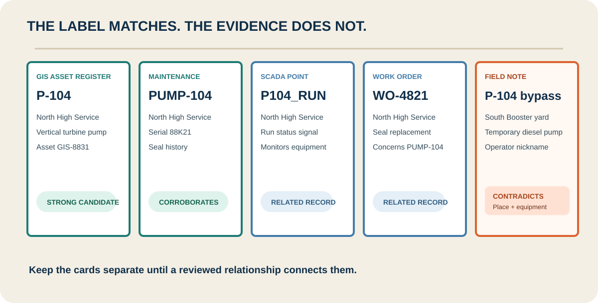
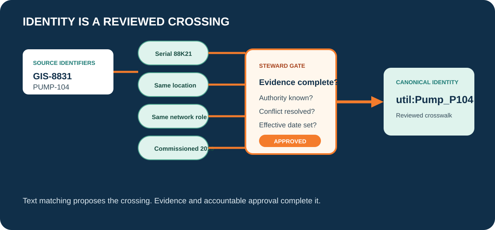
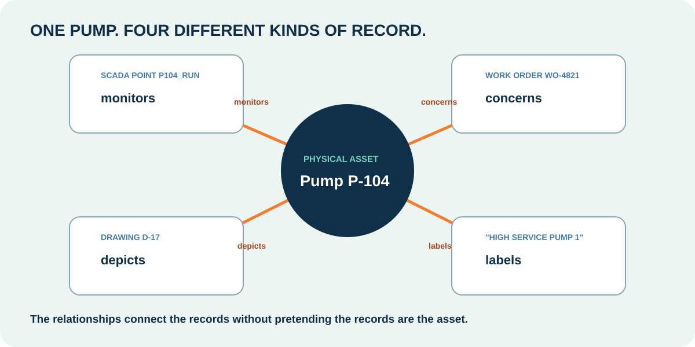
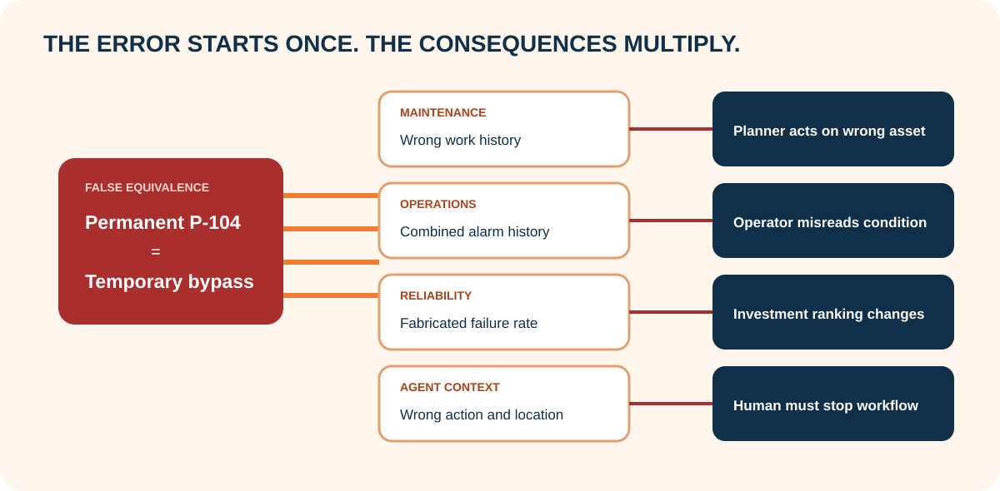
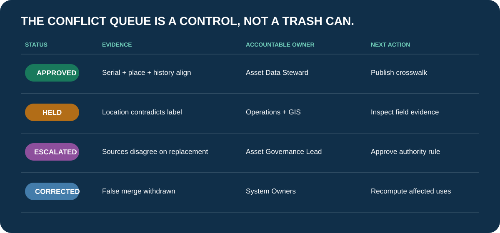

GIS-8831 / P-104
- Location
- North High Service Station
- Equipment
- Vertical turbine duty pump
- Evidence date
- 2026-07-18
Decide when records identify the same physical utility asset, when they merely concern it, and when the evidence requires a steward hold.
Misconception we will change: Matching asset names prove that records describe the same physical thing.
At Riverbend Water, a supervisor asks for every open work order and alarm associated with Pump P-104. Five systems return something. The Supervisory Control and Data Acquisition system reports P104 at North High Service. The geographic map lists P-104 at North Booster. The maintenance system lists PUMP-104 with a seal replacement. A drawing labels a duty pump P-104. An operator calls a nearby temporary bypass pump P-104 because that is how the crew has always referred to it.
The repeated label feels reassuring. It is only a candidate signal. Locations differ, equipment descriptions differ, dates differ, and one name comes from conversation rather than an authoritative register. If you merge first and investigate later, you have already changed what every connected system may claim.

Choose the strongest answer, then check it. The feedback explains the boundary.
A source identifier is the name one system uses. A canonical identifier is the governed identifier your cross-system process uses after review. The crosswalk between them is an approved mapping, not a string replacement.
Useful evidence includes stable equipment attributes, physical location, system role, installation history, manufacturer and serial information, network position, and source authority. Exact text can help. Fuzzy text can help. Neither is sufficient when stronger evidence contradicts the match.

Select every item the bounded task needs. Leave irrelevant or unauthorized material outside the packet.
The physical pump is one domain thing. A telemetry point monitors it. A work order concerns it. A drawing depicts it. A nickname labels it. Those records should connect to the asset through different relationships.
Treating all five records as equivalent resources collapses useful distinctions. An alarm is not a pump. A work order is not a pump. Their identifiers can remain independent while explicit relationships make the graph traversable.

Match each ordinary-language question to the job that answers it. Check all rows together, then revise any row that needs another look.
Review each evidence card. Record same physical asset only when the record identifier denotes the pump itself and the evidence supports the mapping. Record related record when the item concerns, monitors, or depicts the pump. Record unresolved candidate when contradictory evidence prevents a defensible conclusion.
The goal is not to maximize the match rate. The goal is to make every approved mapping reviewable and every unresolved case visible.
Review location, equipment role, date, and source. Record the finding each evidence card supports.
Suppose the temporary bypass pump is incorrectly declared identical to the permanent high-service pump. The error now crosses every relationship attached to either identifier. Maintenance history appears on the wrong asset. Alarm summaries combine two pieces of equipment. Reliability metrics use a fabricated operating history. An agent may recommend work based on the wrong duty and isolation conditions.
{'Select every path below. Notice that the first visible symptom changes, but the first repair is the same': 'withdraw the unsupported identity mapping, preserve the conflict, and route it to accountable review.'}

Open every consequence path. Identify the first repair and accountable owner before looking at the final symptom.
Follow the consequence
First repair: Withdraw the mapping and reassign affected work records after review
Accountable role: Asset Data Steward
Follow the consequence
First repair: Separate identities and revalidate telemetry-to-asset mappings
Accountable role: Operational Technology Asset Owner
Follow the consequence
First repair: Correct identity and recompute affected metrics with provenance
Accountable role: Reliability Engineering
Follow the consequence
First repair: Block action
Accountable role: Application Product Owner
Software can produce candidates and confidence signals. It can compare strings, coordinates, equipment attributes, and graph neighborhoods. The utility still needs a policy for which sources are authoritative, which conflicts require escalation, who may approve a mapping, and how corrections propagate.
Leaders should ask where unresolved candidates wait, how long they wait, who owns the queue, and which operational uses are blocked until review. A confidence score without a decision policy is not governance.

Choose the strongest answer, then check it. The feedback explains the boundary.
In wastewater, Lift Station 7 in the maintenance system may not be the retired LS-7 point still visible in an old telemetry archive. In stormwater, Outfall 12 may not be the monitoring location called OF-12 in a laboratory spreadsheet. Similar labels start the investigation. Location, role, time, source, and steward authority finish it.
RDF can express that two identifiers denote the same resource, that one record concerns another resource, or that a candidate awaits review. The graph preserves the result. It does not manufacture the evidence or replace the accountable decision.
Choose the strongest answer, then check it. The feedback explains the boundary.
Record one approved mapping and one unresolved candidate. Name the supporting and contradicting evidence. Identify the authoritative source, reviewer, next action, and decision boundary.
Be specific. "The names match" is not enough. "GIS asset 8831 and maintenance asset PUMP-104 share serial 88K21, installation location, and commissioning record; Asset Steward approved on 2026-07-24" is reviewable.
Record the mapping, evidence, contradiction, authority, review route, and limit so another team can challenge the decision.
No. Canonical means it is the governed reference used by a bounded process. It still needs ownership, correction, versioning, and evidence.
It may be strong evidence when identifiers are governed and unique within a known scope. Across unrelated systems, the same text may still refer to different things.
No. Preserve the conflict and prioritize it by operational risk and intended use. A mapping needed for switching operations deserves a different response from one used only for historical reporting.
No. The work order is its own resource. Connect it to the asset with a relationship such as concerns or performedOn.
A model can propose candidates and summarize evidence. Approval authority depends on utility policy, risk, evidence, and accountable human review.
The utility should identify affected queries, reports, models, agents, and decisions, then recompute or review them under the corrected identity.
Riverbend Water, Pump P-104, identifiers, locations, and records are instructional. W3C RDF and OWL sources explain identity-capable graph statements and semantics. W3C PROV-O supports provenance modeling. No standard determines Riverbend's authoritative source, match threshold, or approval role.
See the concepts, sources, competency, and evidence boundary behind this module.
Discuss which relationship your utility repeatedly rebuilds by hand. Community discussion is not governed evidence.
Complete the evidence hold, evidence and role checks, five-record docket, every false-merge path, governance and transfer decisions, and Identity Crosswalk and Conflict Queue.